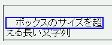

overflow: visible; が指定されているとき（初期値）、ボックスをはみ出す内容物はボックス外に表示されると規定されているが、IEでは内容物に合わせてボックスが拡大される。
<p style="width:10em; height:1em; border:2px solid blue;">ボックスの……文字列</p>
ボックスのサイズを超える長い文字列
ボックスをはみ出す部分はボーダーの外側に表示されるはずです。
Moz1.0での表示（標準モード）
WinIE6.0での表示（標準モード）
長い半角英数文字列が存在する要素では、ボックス幅が拡大されます。WinIEバグ078を参照してください。
WinIE6.0では標準・互換モードともに不具合の発生が確認されました。